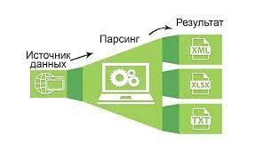

Техники парсинга
Существует множество различных техник парсинга.
Некоторые из наиболее распространенных техник включают:
- Регулярные выражения - это шаблоны, которые используются для поиска и сопоставления строк.
- Грамматики - это набор правил, которые определяют, как элементы данных могут быть объединены в структуры данных.
- Анализ деревьев - это процесс построения дерева, которое представляет структуру данных.

Данный
сайт
несет
исключительно
познавательный
контент